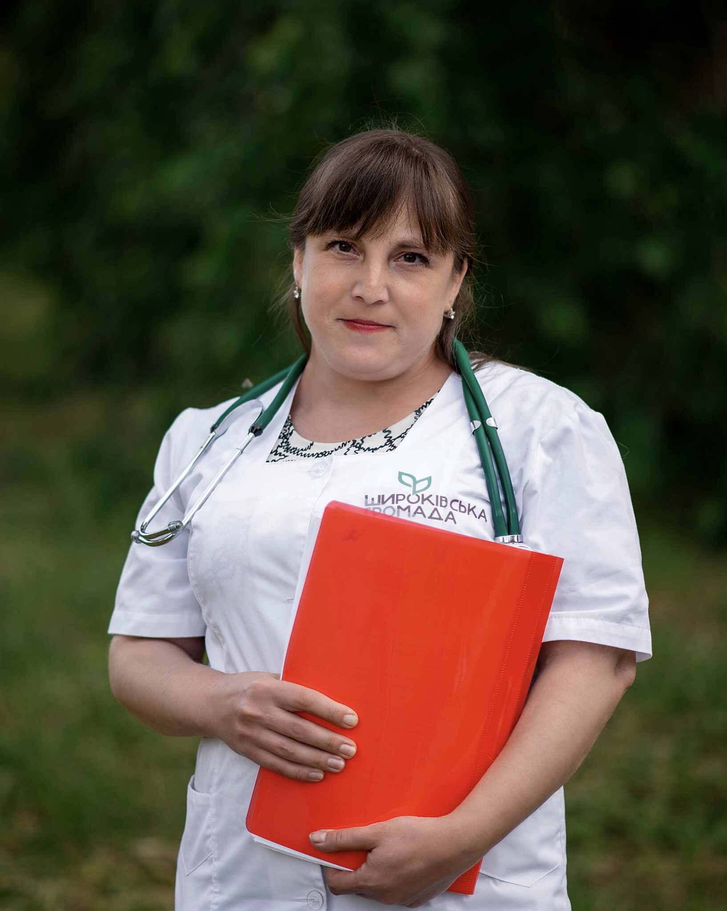

Новини
Головна
Послуги
Лiкарi
Адмiнiстрацiя
Наша професiйна команда
Особистий та професiйний досвiд, який робить їх лiкарями,
якими вони є сьогоднi
ЛIКАРI
Шкабарня Ірина Валеріївна
Директор (головний лікар)
Сімейний лікар
Педіатр
Загальний стаж медичної практики -
14 років
тел. (050) 619 77 44
Гурська Юлія Василівна
Заступниця директора
Сімейний лікар
Педіатр
Загальний стаж медичної практики -
23 років
тел. (067) 479 13 45
Соломко Василь Андрійович
Сімейний лікар
Загальний стаж медичної практики -
41 років
тел. (067) 950 02 94
Павленко Оксана Василівна
Завідувачка лікувально-профілактичного відділу
Сімейний лікар
Педіатр
Загальний стаж медичної практики -
16 років
тел. (067) 286 86 48
Ярошенко Валерій Іванович
Сімейний лікар
Загальний стаж медичної практики -
40 років
тел. (096) 359 33 01
Шелудько Денис Миколайович
Сімейний лікар
Педіатр
Дитячий кардіолог
Кандидат медичних наук
Загальний стаж медичної практики -
18 років
Стаж роботи за фахом «Дитяча кардіологія» -
10 років
тел. (067) 479 13 45
Максимова Любов Віталіївна

Сімейний лікар
Загальний стаж медичної практики -
8 років
тел. (098) 355 17 30
Бєлих Марія Іванівна
Сімейний лікар
Педіатр
Загальний стаж медичної практики -
6 років
тел. (099) 121 65 03
Бурдаєва Вікторія Миколаївна
Сімейний лікар
Клінічний ординатор кафедри Сімейної медицини ЗМАПО
Загальний стаж медичної практики -
6 років
тел. (067) 479 13 45
Безбородов Андрій Сергійович
Сімейний лікар
Загальний стаж медичної практики -
6 років
тел. (050) 234 80 25
Гаряча лiнiя:
(099) 18 88 103
(з 8:00 - 20:00)
Цiлодобова консультацiя:
(061) 239 63 07
Реєстратура:
239 63 07
Бухгалтерiя:
239 63 08
пн - пт
з 08:00 до 18:00
сб
з 09:00 до 13:00
нд
вихiдний
Напишiть нам
НАДIСЛАТИ
https://moz.gov.ua
https://nszu.gov.ua